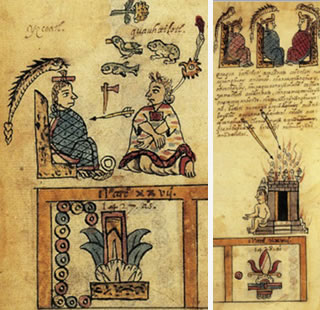
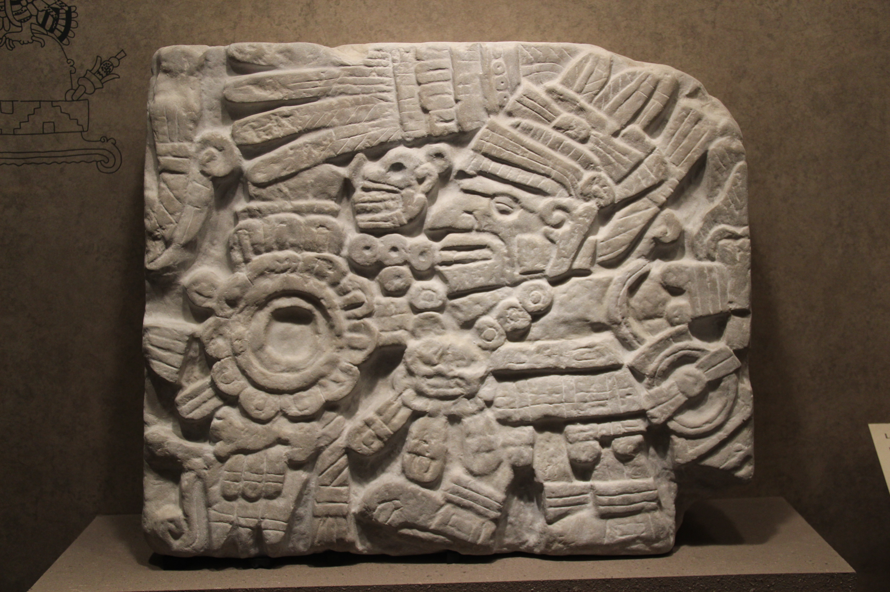

La cultura ñähñu es una de las más antiguas del centro de México, desciende de la raíz otopane y del tronco común otomange, es conocida a través del termino despectivo impuesto como Otomí, sin embargo su verdadero nombre es Ñähñu, mismo con el que hasta la fecha se auto denomina.
Al respecto habremos de aclarar que es muy común escuchar los términos Ñähñu, Hñähñu y Ñáhñu; debido a que el primero se refiere al pueblo o la cultura en sí, el segundo hace referencia al idioma que hablan y el último, a la persona que lo habla, es decir al hablante.
El pueblo Ñähñu tiene una antigüedad que va hacia los 10 mil años antes de cristo, partiendo del tronco común otomangue; de acuerdo a estudios realizados, a partir del idioma con un método conocido como glotocronología, sus raíces otopames mínimo nos lleva a 5 mil años de antigüedad.

Con una antigüedad como esta es de suponer que a través de los tiempos este pueblo ha sufrido transformaciones y hoy día se sabe que de estas mismas raíces descienden pueblos oaxaqueños como los mixtecos, zapotecos, mazatecos y mucho más al sur del continente, los mangues ya desaparecidos, quienes habitaron en centro América; de ahí también desencierro pueblos del centro de México como los chichimecos Jonás, oculticos, matlazincas, Pames, mazahuas.
Actualmente existen poblaciones Ñähñu en los estados de Michoacán, Guanajuato, estado de México, Querétaro, Hidalgo, Ciudad de México, Puebla y Veracruz; Muchas de estas tienen diferentes formas de hablar aunque su raíz lingüística es la misma, originándose con este hecho las comunmente llamadas parientes dialectales.

El pueblo Ñähñu es una gran cultura que se posicionó de gran parte del centro de México, en la antigüedad existieron pueblos otomianos (como comunmente se conoció en el pasado) desde las costas del pacífico hasta el golfo de México, por lo que muchos pueblos o ciudades en la actualidad aún se les recuerda sus nombres originales Hñähñu, tal como lo es la ciudad de México de nombre original: M´onda o bien Tlaxcala como Mahme, Toluca: Nzuhni, entre otros, así mismo hoy día podemos encontrar a hablantes de la lengua Hñähñu o cuando menos descendientes de este pueblo en varios estados del país, en la unión americana y otros países del mundo.